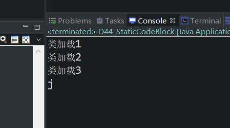
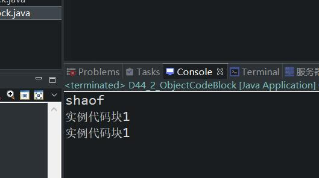

原文连接:https://www.cnblogs.com/ruigege0000/p/11729917.html
一、可以使用static关键字来定义“静态代码块”
1.语法规则
static {
java语句；
}
2.静态代码块在类加载时执行，并且只执行一次
3.静态代码块在一个类中可以编写多个，并且遵循自上而下的顺序依次执行。
4.静态代码块的作用是什么？怎么使用？用在哪里？什么时候用？
这当然和具体的需求有关，例如：项目中要求在类加载的时候执行代码完成日志的记录，那么这段记录日志的代码就可以编写在到静态代码块之中，完成日志记录。
静态代码块是java准备的一个特殊时刻，这个特殊时刻被称为类加载时刻，若希望在此执行一段特殊的程序，这段程序可以直接放在静态代码块之中。
package com.bjpowernode.java_learning;
public class D44_StaticCodeBlock {
static {
System.out.println("类加载1");
}
static {
System.out.println("类加载2");
}
static {
System.out.println("类加载3");
}
public static void main(String[] args) {
System.out.println("j");
}
}
5.通常在静态代码块当中完成预备工作，先完成数据的准备工具，例如：初始化连接池，解析XML配置文件
二、实例代码块/语句块
1.实例代码块可以编写多个，也是遵循自上而下的顺序进行执行
2.实例代码块在构造方法执行之前进行执行，构造方法执行一次，实例代码块执行对应一次。
3.实例代码块也是java语言准备的一个特殊时机，这个特殊时机被称为对象初始化时机。
4.语法结构
{
java语句；
}
5.举例
package com.bjpowernode.java_learning;
public class D44_2_ObjectCodeBlock {
{
System.out.println("实例代码块1");
}
{
System.out.println("实例代码块1");
}
public static void main(String[] args) {
System.out.println("shaof");
new D44_2_ObjectCodeBlock();
}
}

三、总结
1.public表示公开的，在任何位置都是可以访问的
static表示静态的，使用“类名."的方式进行访问，不需要创建对象，就可以调用这里的main方法。
2.方法什么时候定义为静态的方法（静态方法又称为静态上下文）
方法描述的是动作，当所有的对象执行这个动作的时候，最终产生的影响是一样的，那么这个动作已经不再属于某一个对象动作了，可以将这个动作提升为类级别的动作，模板级别的动作。
3.大多数方法都定义为实例方法，一般一个行为或者一个动作在发生的时候，都需要对象的参与，但是也是有例外的，例如：大多数”工具类“的方法都是静态方法，因为工具类就是方便编程，为了方便方法的调用，自然不需要new对象是最好的。例如:Math.PI
四、继承
1.继承是面向对象的三大特征之一。（三大特征：封装、继承、多态）
2.继承“基本”作用：代码复用，但是继承最重要的作用是：有了继承才会有以后的“方法覆盖”和“多态机制”
3.继承语法格式：
[修饰符列表] class 类名 extends 父类名{
类体 = 属性 + 方法
}
4.java语言中只支持单继承，一个类不能同时继承很多的类，只能继承一个类，在C++中支持多继承
5.关于继承的一些术语：
B类继承A类，其中：
A类称为：父类，基类，超类、superclass
B类称为：子类，派生类，subclass
6.在java语言中子类继承父类都继承哪些数据呢?
（1）私有的不能继承；（2）构造方法不能继承；（3）其他数据都可以继承
7.虽然java语言之中只支持单继承，但是一个类也可以间接继承其他类，例如：
C extends B{
}
B extends A{
}
A extends T{
}
C直接继承B类，但是C类间接继承A、T类
五、源码：
D44_1_StaticCodeBlock.java
D44_2_ObjectCodeBlock.java
地址：
https://github.com/ruigege66/Java/blob/master/D44_1_StaticCodeBlock.java
https://github.com/ruigege66/Java/blob/master/D44_2_ObjectCodeBlock.java
2.CSDN：https://blog.csdn.net/weixin_44630050（心悦君兮君不知-睿）
3.博客园：https://www.cnblogs.com/ruigege0000/
4.欢迎关注微信公众号：傅里叶变换，个人公众号，仅用于学习交流，后台回复”礼包“，获取大数据学习资料